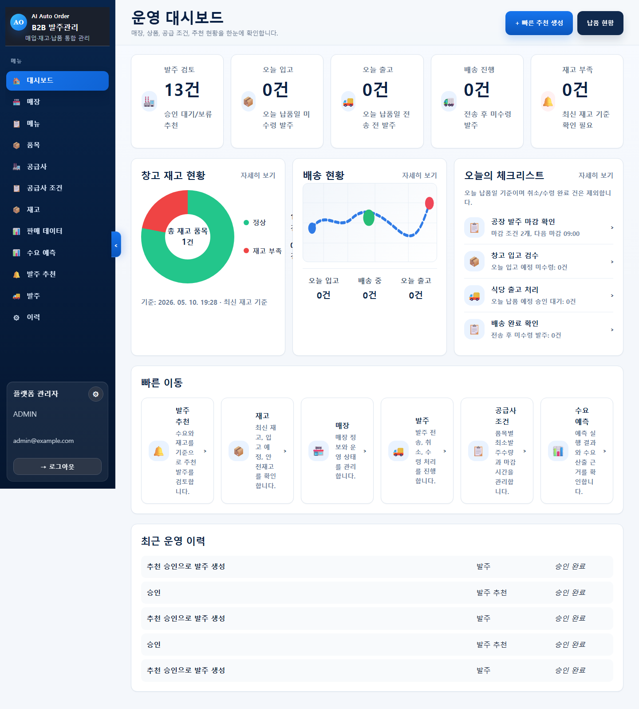
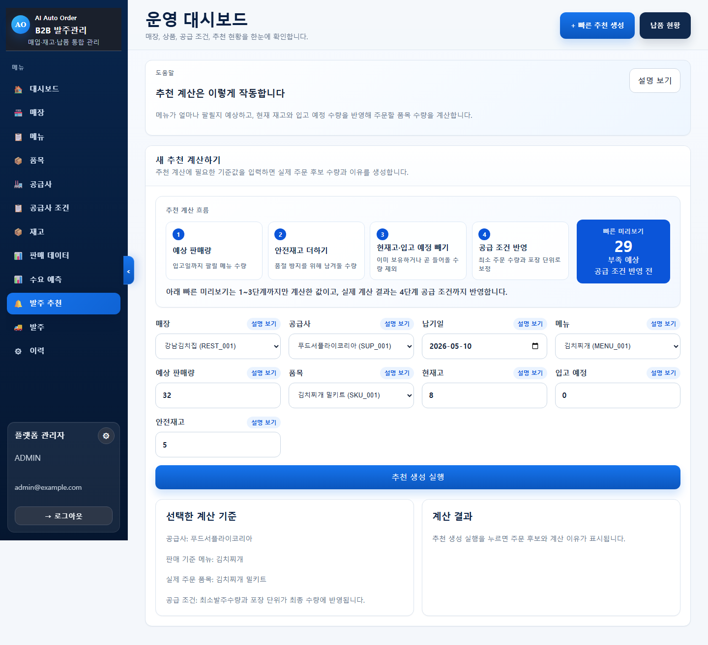
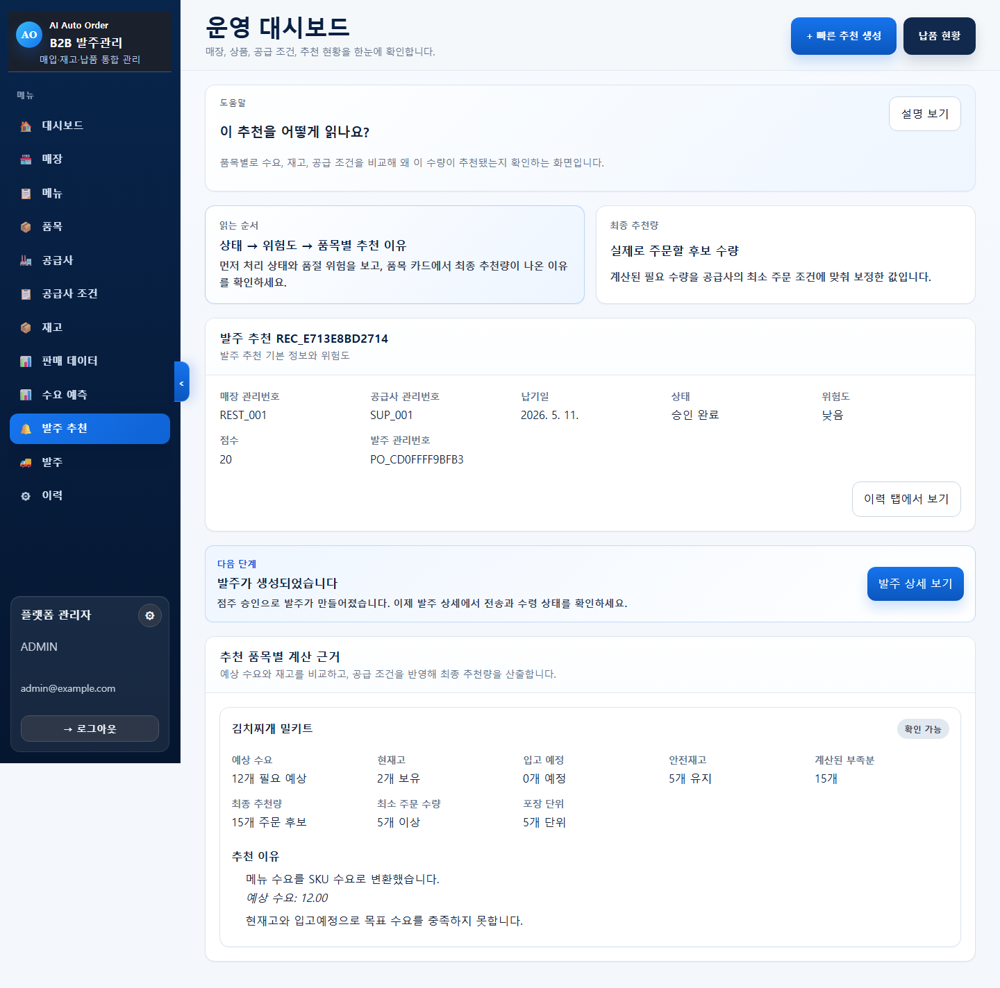
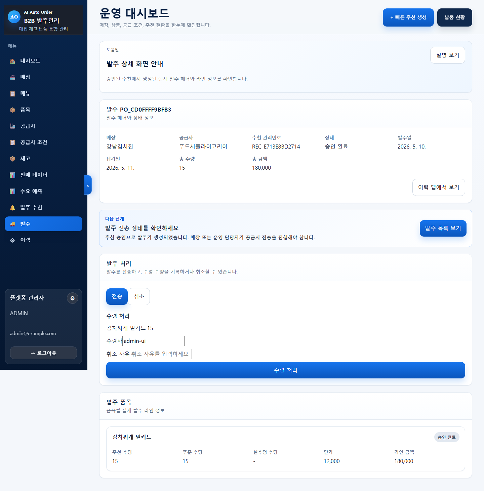
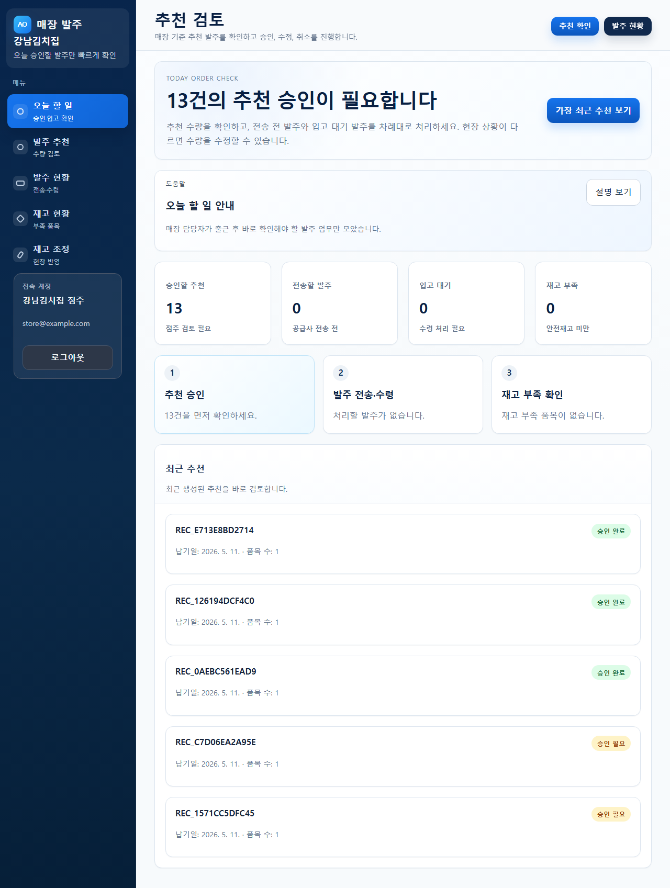
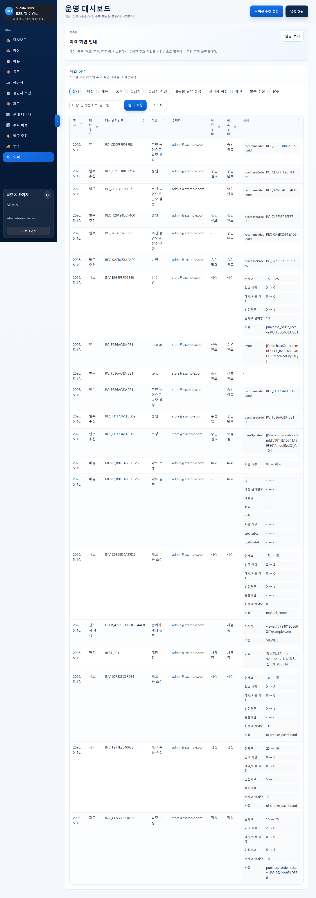
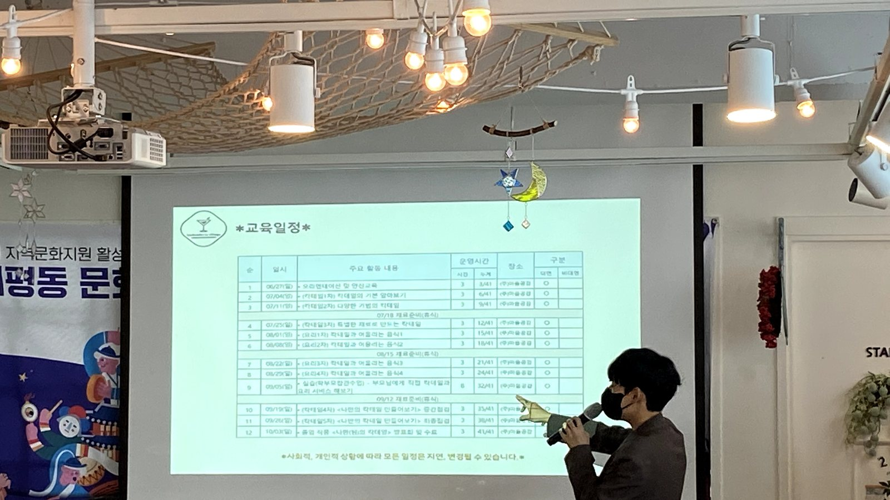

2025.02 - 현재
아이티센엔텍 · 동행복권 전자복권 운영지원
Java, eGovFramework, Oracle 기반 시스템에서 REST API 신규 개발, 장애 대응, 배포 및 모니터링, 보안 취약점 개선을 수행했습니다.
- 월 10건 이상 REST API 신규 개발 및 운영 반영
- 주 30건 이상 문의 및 데이터 검증 요청 대응
- 오픈 후 장애 패턴 분석과 개선으로 안정화 기여
Profile
전자복권, 통신 과금, 청구 시스템처럼 장애 영향도가 큰 서비스에서 운영 개발자로 일하며 안정성, 변경관리, 배포, 데이터 검증의 중요성을 체득했습니다. 단순 개발 산출물보다 현장에서 반복되는 문제를 줄이고, 팀이 같은 기준으로 움직일 수 있는 체계를 만드는 일에 강점이 있습니다.
최근에는 AI Agent와 자동화 도구를 활용해 B2B 자동 발주 SaaS MVP를 설계하고 구현하며, AI를 개발 생산성과 운영 품질을 높이는 실무 도구로 적용하는 방식을 정리하고 있습니다. 다양한 서비스 환경에서 유지보수 가능한 코드, 추적 가능한 운영 흐름, 반복 업무를 줄이는 자동화에 집중합니다.
Experience
Java, eGovFramework, Oracle 기반 시스템에서 REST API 신규 개발, 장애 대응, 배포 및 모니터링, 보안 취약점 개선을 수행했습니다.
Classic ASP, Pro*C, Oracle 기반 레거시 시스템을 운영하며 브라우저 호환성 개선, 청구서 PDF 처리, 반복 업무 자동화를 진행했습니다.
Java, ProObject, Oracle 기반 과금 배치 운영, 장애 대응, UAT/회귀 테스트, 문서화 체계 개선을 담당했습니다.
Featured Project

식당의 판매 데이터, 재고 상태, 발주 이력을 기반으로 수요 예측과 발주 추천을 생성하는 SaaS MVP입니다. 단순 화면 구현보다 운영자가 추천 근거를 확인하고, 승인·수정·취소 이력을 남길 수 있는 업무 흐름에 초점을 맞췄습니다.




Engineering Strengths
배치 실행, API 응답, 데이터 변경 흐름을 추적 가능하게 구성해 장애 원인 파악 시간을 줄입니다.
자동화 결과를 그대로 신뢰하지 않고, 근거와 변경 이력을 확인할 수 있는 흐름으로 구현합니다.
누가, 언제, 어떤 데이터를 변경했는지 확인할 수 있게 만들어 운영 리스크를 낮춥니다.
반복되는 업무를 API, 배치, 문서, 테스트 기준으로 정리해 장기적으로 다루기 쉬운 시스템을 만듭니다.
Operation Quality
운영 시스템은 기능보다 추적성과 복구 가능성이 더 중요할 때가 많습니다. B2B 자동 발주 프로젝트에서는 action log, role 기반 접근 제어, 워커 실행 결과, Playwright 기반 시나리오 검증을 통해 장애 상황에서 확인해야 할 정보를 남기는 데 집중했습니다.

Communication

개발 업무는 코드를 작성하는 일에서 끝나지 않고, 동료와 운영자가 같은 기준을 이해하도록 돕는 과정까지 포함된다고 생각합니다. 운영 문서, 장애 대응 기준, 테스트 체크리스트, 협업 도구 정리를 통해 개인의 경험을 팀이 재사용할 수 있는 자산으로 남기는 데 관심이 있습니다.
AI Collaboration
Contact
Java 백엔드 운영 개발 경험, 자동화 프로젝트, AI Agent 활용 역량을 바탕으로 안정적이고 유지보수 가능한 서비스를 만드는 개발자가 되겠습니다.